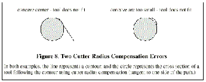

The interpreter will issue the following messages involving cutter radius compensation.
Changing a tool while cutter radius compensation is on is not treated as an error, although it is unlikely this would be done intentionally. The radius used when cutter radius compensation was first turned on will continue to be used until compensation is turned off, even though a new tool is actually being used.
|
When cutter radius compensation is on, it must be physically
possible for a circle whose radius is the half the diameter given
in the tool table to be tangent to the contour at all points of the
contour.
|
|

|
In particular, the interpreter treats concave corners and concave arcs into which the circle will not fit as errors, since the circle cannot be kept tangent to the contour in these situations. This error detection does not limit the shapes which can be cut, but it does require that the programmer specify the actual shape to be cut (or path to be followed), not an approximation. In this respect, the interpreter differs from interpreters used with many other controllers, which often allow these errors silently and either gouge the part or round the corner. If cutter radius compensation has already been turned on, it cannot be turned on again. It must be turned off first; then it can be turned on again. It is not necessary to move the cutter between turning compensation off and back on, but the move after turning it back on will be treated as a first move, as described below.
It is not possible to change from one cutter radius index to another while compensation is on because of the combined effect of rules 4 and 11. It is also not possible to switch compensation from one side to another while compensation is on. If the tool is already covering up the next XY destination point when cutter radius compensation is turned on, the gouging message is given when the line of NC code which gives the point is reached. In this situation, the tool is already cutting into material it should not cut.
If a D word is programmed that is larger than the number of tool carrousel slots, an error message is given. In the current implementation, the number of slots is 68.
The error message. "two G Codes Used from Same Modal Group," is a generic message used for many sets of G codes. As applied to cutter radius compensation, it means that more than one of G40, G41, and G42 appears on a line of NC code. This is not allowed.